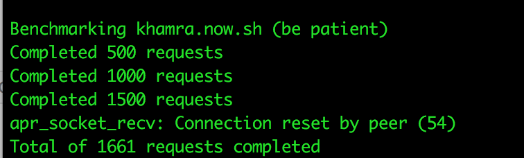

💭 Benchmarking Performance Differences Between Deployments on Surge, Zeit and Github Pages 💭
Hey fellow hackers! It’s been ages but l0rdcafe’s back at it again and this time the topic of this post is performance.
A small while ago, I had built an app right here, which given geolocation permission and a radius in kilometers would recommend nearby places to get drinks. Moreover, as I learned more and more about performance, how performant the app is was of interest to me. As a result, I decided to deploy this app to Surge and Zeit, with it being already deployed to Github Pages and measure the difference in performance between all three.
The tool used for this measurement was the Apache Bench CLI, an infamous tool that benchmarks website performance and returns results detailing the number of requests the server can perform, the time it took for the user to get a response, the time it took for the client to establish a connection with the server, the processing time as in the time between sending the first byte of the request to the server and getting the first byte of the server response, waiting time or the time between sending the last byte of the request and getting the first byte of the response as well as other information.
To get consistent results, I decided to run the same command on all three servers and compare the returned results. The command run was ab -c 250 -n 5000 khamra.surge.sh/, the first argument denotes concurrency as in the number of requests being concurrently made to the server while the second argument denotes the total number of requests made to the server.

The screenshot above shows the results for the Surge server. The first part is self explanatory, detailing the server software as SurgeCDN/1.2.0, the server hostname as khamra.surge.sh and the server port as 80. The document length follows at 1939 bytes. The time taken for tests is 55.845 seconds and it has 55 failed requests. The total transferred bytes are 11177506 bytes and the transferred HTML is 9594405 bytes. Now onto the important parts, the Surge server can process 89.53 requests per second. The first time per request outlines how much time it took for the server to process 250 concurrent requests, which is at 2792.228 ms and the second time per request denotes how much time it took for the browser to get the index.html, which is at 11.169 ms. Next up are connection times, the Connect values provide the smallest and largest amount of time it took for the client to establish a connection with the server through a DNS lookup, which are 226 ms and 41493 ms respectively, as well as a mean of 1405 ms and standard deviation of 2684.6 ms. Secondly, it provides min, max, mean and standard deviation values for the amount of time between sending the first byte of the request and receiving the first byte of the response, which are 229 ms, 15892 ms, 862 ms and 1054.5 ms respectively. Thirdly, the waiting time values defining the amount of time between sending the last byte of the request and receiving the first byte of the response, with its min value being 228 ms, its max value being 15891 ms, its mean being 860 ms and its standard deviation being 1054.6 ms. Lastly, the total values combine the above into a min value of 459 ms, a max value of 43283 ms, a mean of 2267 ms and a standard deviation of 2932.5 ms. Means are often skewed by outliers, and so 95% of the requests served within a certain time was 5699 ms, which is more accurate than the 100% of requests served in 43283 ms.

The benchmarking for the Github Pages then followed running the same command as the one ran on the Surge server. The results show a similar server port of 80, concurrency level of 250 and complete requests of 5000, but a server software of Github.com, and server hostname of l0rdcafe.github.io. The time taken for tests is longer than Surge’s at 62.66 seconds. The Github Pages unlike the Surge server didn’t have any failed requests and the total transferred was less at 3602927 bytes and less transferred HTML at 890000 bytes. But the requests per second is less at 79.80 seconds, and its time per concurrent requests is higher at 3133.008 ms as well as the time taken for the browser to get index.html is slightly more at 12.532 ms. The connection times show a remarkable difference where the Connect times’ min, max, mean and standard values are almost better than that of Surge’s at 96 ms min value, 42069 ms max value which is in fact larger, 1328 ms mean value and standard deviation of 1913.6 ms. The Processing times also denote an improvement on the min value but worse max, mean standard deviation values, with min value being 96 ms, mean value being 874 ms, standard deviation value being 2623.1 ms and max value being 58311 ms. Waiting times show an improvement on min value, while max, mean and standard deviation values are worse, with min being 197 ms, max is 58310 ms, mean is 873 ms and standard deviation is 2623.1 ms. Lastly, Total times’ min and mean values improved while max and standard deviation were worse off, min value being 197 ms, mean value being 2201 ms, standard deviation being 3234.3 ms and max value being 58444 ms. 95% of the requests took 6229 ms, which is worse when compared to the Surge server.

When testing the Zeit server, something peculiar happened, the connection was reset by peer and the total number of completed request peaked at 1661 instead of meeting the argument value of 5000 requests. This prevented Apache Bench from benchmarking the server as Zeit timed out the connection possibly to avoid server request overload. By limiting the number of requests made to a Zeit server, it effectively takes Zeit out of the running as far as web performance.
To wrap up, after the rigorous testing of the different servers I can conclude that Surge and Github Pages’ servers are more performant than Zeit’s and that in the best case scenario Github Pages is more performant than Surge. Surge though, according to the benchmarking results is on average slightly more performant than Github Pages and although the differences are small and each have got their own benefits and downsides, when scaling larger and as the numbers of requests increase, Surge’s worst case scenarios are still better than Github Pages’ worst cases.
July 05, 2018